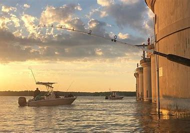

Hi, my name is Jeffrey Lord and I'm gonna try and teach you something about fishing in Columbia,SC. Growing up I have always wanted to get more invested in fishing and being in South Carolina has certainly given me the opportunites to give it a shot. I have lived in South Carolina for around 15 years and have been fishing on and off for as long as I can remember. I grew up in Charleston and mostly just fished in small rivers and ponds and coming here has kept the same feeling and has made me feel more at home. The goal of this page is to help everyone find some good spots to try fishing and certain things to look out for before getting started.
From my time in Columbia I have learned many things to remember but also a few things to avoid